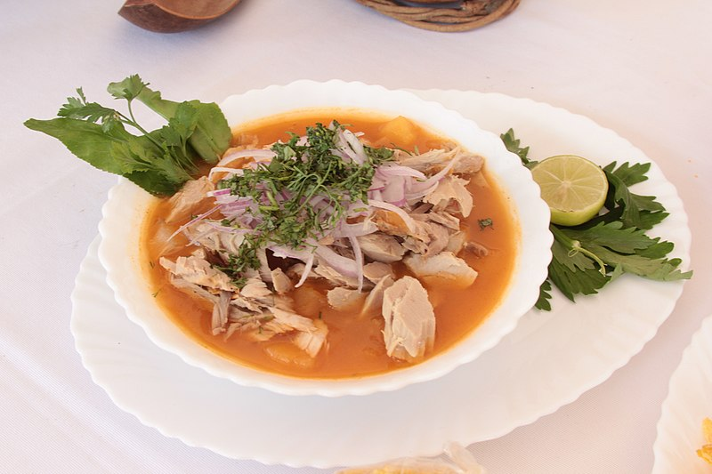

Introcuccion al desarrollo web
Receta de Encebollado
Fuente: Laylita Recetas

- 1Kg de atun fresco
- 1/2 Kg de Yuca
- 2 Cucharadas de aceite
- 2 tomates
- 1/2 Cebolla
- 1 Cucharadita de aji en polvo no picante
- 2 Cucharaditas de comino molido
- 8 Tazas de agua
- 5 Ramitas de cilantro
- Sal al gusto
Contactanos en tal direccion